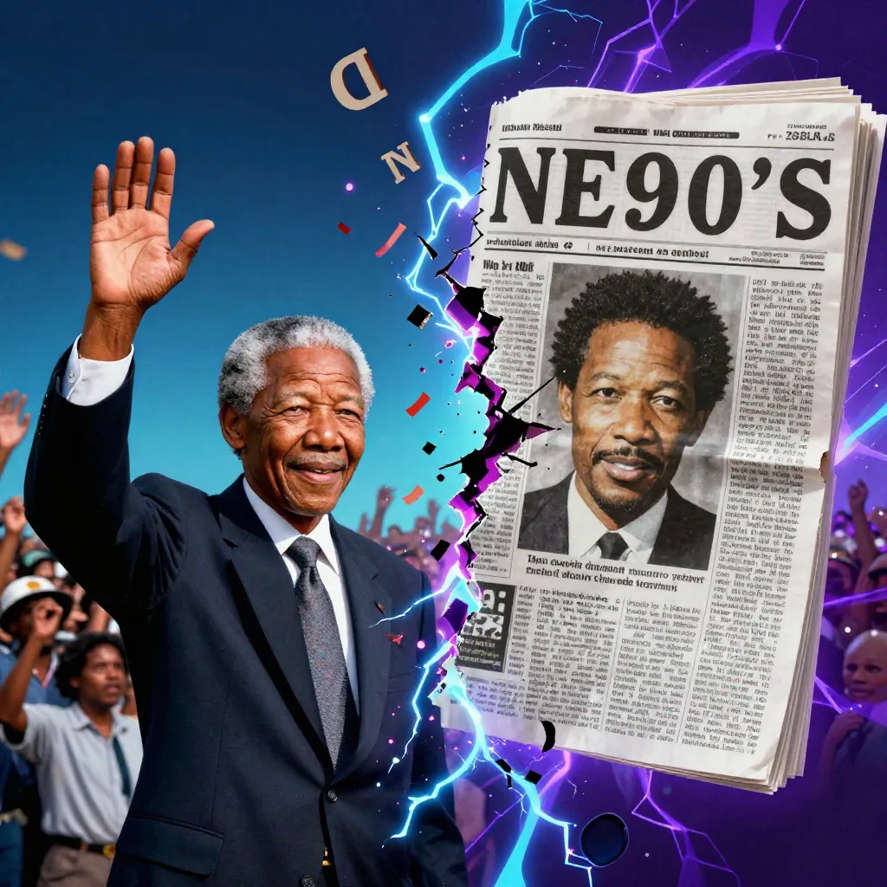

The Mandela Effect: Why Millions of People Remember a History That Never Happened

In 2009, a paranormal researcher named Fiona Broome was at a convention called Dragon Con. She told a friend about a vivid memory. She remembered Nelson Mandela dying in prison in the 1980s. She remembered the news coverage, the funeral, and the mourning. She was certain.
Her friend was equally certain, and equally wrong. Nelson Mandela did not die in prison. He was released from Victor Verster Prison in 1990. He won the Nobel Peace Prize in 1993. He was elected President of South Africa in 1994 and served until 1999. He died on December 5, 2013, at the age of 95. The funeral Broome remembered never happened, not in the 1980s and not the way she described it.
But Broome was not alone. She wrote about her experience online and found that thousands of people shared the same false memory. They also recalled news broadcasts, memorial services, and heartfelt tributes for Mandela’s death, decades before it happened.
Broome gave this a name: the Mandela Effect. It is when a large group of people share a vivid, confident, and completely false memory of an event, detail, or fact.
It began as a curious story about one man’s death. Since then it has become one of the most discussed psychological puzzles of the internet age. Millions of people have found that their memories of movies, brand logos, historical events, geography, and even the color of common objects are provably wrong. And millions of others share the same wrong memories.
The Mandela Effect raises deep questions. How reliable is human memory? What is shared experience? And might something stranger than simple forgetting be at work?
The best way to understand the Mandela Effect is through examples. Some are truly startling. They are not obscure facts that a few people get wrong. They are widely shared, deeply held false memories that last even after people are corrected. Many people who learn the truth feel a strong sense of wrongness, as if reality had been quietly changed.
Perhaps the most famous example is the Berenstain Bears. This children’s book series was created by Stan and Jan Berenstain. It has been published as The Berenstain Bears from the start. But a huge number of people remember the name as “Berenstein,” ending in “-ein” and not “-ain.” Possibly most of those who grew up with the books remember it this way.
The memory is often very specific. People recall the spelling on book covers, on library cards, and on the title pages they read as children. But the real name has always been Berenstain, matching the authors’ real surname.
Then there is the most famous movie misquote in history. In The Empire Strikes Back (1980), Darth Vader tells Luke Skywalker who he really is. It is one of the best-known moments in cinema. Most people remember the line as “Luke, I am your father.” The real line is “No, I am your father.” Vader never says “Luke” in that scene.
The misquote is so common that it has appeared in official Star Wars goods, advertisements, and even other movies. The false memory has been repeated so much that it has almost replaced the original.
Other famous lines are misquoted too. In Disney’s Snow White (1937), the real line is “Magic mirror on the wall,” not “Mirror, mirror on the wall.” The “mirror, mirror” version comes from the original Grimm fairy tale, not from the film. Forrest Gump actually says “Life WAS like a box of chocolates,” not “is like.” And Sherlock Holmes never says “Elementary, my dear Watson” in any of Arthur Conan Doyle’s original stories.
Some Mandela Effects are about pictures. Quick, picture the Monopoly Man, the mustached mascot of the classic board game. Does he wear a monocle? A monocle is a single eyeglass lens. If you said yes, you are in the big majority, and you are wrong. Rich Uncle Pennybags has never worn a monocle in any official picture of the character.
The mix-up probably comes from blending different images. Mr. Peanut, the Planters mascot, wears a monocle and a top hat. In popular culture, the classic “monopoly man” type often has a monocle, as a sign of wealth.
You see a man in a top hat with a mustache, and your brain adds the monocle because it “fits.” Psychologists call this confabulation. It happens when the brain puts believable details into a memory to make a complete story.
The same thing explains other mistakes. Many people remember Curious George with a tail. He never had one, because he is an ape and not a monkey. Many recall that Pikachu’s tail has a black tip, but it is all yellow. People picture Henry VIII holding a turkey leg in portraits, but no such portrait exists.
Many viewers also remember the character Dolly with metal braces on her teeth in the 1979 James Bond film Moonraker. That made a funny visual link to the villain Jaws. But she has no braces in any frame of the film.
Some of the most confusing Mandela Effects are about geography. Many people recall New Zealand lying to the northwest of Australia. It is actually to the southeast. Others remember South America lying directly south of North America. It is really shifted far to the east. Some place Sri Lanka west of India instead of to its south.
These mistakes are striking because they involve spatial memory. That is the mental map we carry in our heads, not words or pictures. They suggest the Mandela Effect is not just mixing up similar words or similar images. It may be about something more basic in how the brain builds and stores models of the world.
The effect also turns up often in the world of brands. Many people remember the Ford logo with a curl or loop at the end of the “F.” There is no such curl. Many remember the Volkswagen logo with a line running unbroken across the middle. The real logo has a gap. Many remember the Kit Kat logo with a hyphen, “Kit-Kat.” The official name has never had one.
These brand examples are especially interesting because people see them so often. Most of us have seen the Ford logo thousands of times. Yet our memory of it is wrong.
The leading scientific explanation comes from cognitive psychology. Cognitive psychology is the study of how the mind thinks and remembers. One key figure is Dr. Elisabeth Loftus, a professor at the University of California, Irvine. She has spent decades studying how easily human memory can change.
Loftus’s work shows that memory is not a recording device. It is a process of rebuilding. Each time you recall an event, your brain puts it together from fragments. It fills the gaps with guesses, expectations, and facts learned later.
In her famous “Lost in the Mall” experiment (1995), Loftus and her colleague Jacqueline Pickerel tested this. About 25 percent of the people could be led to “remember” a made-up event from childhood. The event was being lost in a shopping mall. The researchers used only guided suggestion and follow-up interviews.
These people did not just agree that it might have happened. They developed rich, detailed, confident memories of it. They recalled sights and sounds and feelings, for an event that never took place.
Other studies have repeated the result many times. It matters a great deal for the Mandela Effect. If one person can be led to build a vivid false memory through suggestion, a whole culture can build shared false memories. Repetition, social reinforcement, and media exposure can do it.
Psychologists have found several ways that Mandela Effects arise. The first is the schema, a mental framework that helps us sort information. Your schema for a “rich old man in a top hat” includes a monocle. So your brain adds one to the Monopoly Man.
The second is the source monitoring error. You remember information correctly but link it to the wrong source. You may have heard “Luke, I am your father” in a parody, from a friend, or in a meme. Your brain then files it as an “actual movie quote.”
The third is social reinforcement. When you talk about a false memory with others who share it, your shared confidence makes it feel more real. The fourth is confabulation, which fills gaps with believable details. Henry VIII was famously a large king with big appetites. So your brain adds a turkey leg to his portrait because it “fits” the story.
Finally, leading questions can permanently change memories. Loftus asked witnesses how fast the cars were going when they “SMASHED” into each other. Others were asked about cars that “hit” each other. The two groups gave quite different speed estimates. Some even “remembered” broken glass that was not there.
The brain values a story that holds together more than a photographic record. It prefers a coherent false memory to a confusing true one.
Not everyone accepts the psychological explanation. For millions of people, the Mandela Effect feels too specific, too widely shared, and too “real” to be just bad memory.
The most popular paranormal idea is the parallel universes, or multiverse, theory. It says the effect happens when a person or a group shifts from one universe to another. Or perhaps the “timelines” of different universes meet or merge. By this idea, the false memories are not false at all. They are true memories of events in a different reality. In that reality Mandela died in prison, the Bears were Berenstein, and Vader said “Luke.”
The idea borrows from real physics. In 1957, the physicist Hugh Everett III proposed the many-worlds interpretation of quantum mechanics. It suggests that every possible result of every event happens in some branch of reality. But there is a big leap from “the math allows parallel universes” to “you remember Berenstein Bears because you came from a universe where they were spelled that way.” No evidence supports that leap.
One of the most elaborate theories involves CERN and its Large Hadron Collider. It claims that particle physics experiments changed the fabric of reality. They made small changes to the past, which now show up as Mandela Effects.
Another idea is the simulation hypothesis. The philosopher Nick Bostrom advanced it in 2003. It says our reality may be a computer simulation, and Mandela Effects are “glitches” in the code.
Neither theory has any proof to support it. Yet millions of people online have embraced both. That shows how strongly we like explanations that put the blame outside ourselves. The fault, they say, lies not in our brains but in reality itself.
The Mandela Effect is not a mystery of the outside world. It is a mystery of the inside one. It is about the vast, complex, and very unreliable machinery of human memory.
Decades of cognitive psychology give a clear answer. Memory is not a recording. It is a rebuilding, put together fresh each time we use it. It is open to suggestion and distortion. It is quietly edited by a brain that values a good story over exact facts.
The false memories at the heart of the Mandela Effect are not proof of parallel universes or simulation glitches. They are proof of something else that is just as remarkable. The minds of millions of people, working on their own across decades and continents, can settle on the same wrong version of reality. And once that version is fixed, it is almost impossible to shift.
The question the Mandela Effect asks is not whether parallel universes exist. It is whether we can ever truly trust our own minds. Science suggests the answer is more unsettling than any multiverse theory. Can you trust what you remember?
References & Further Reading
Britannica: Mandela Effect — Definition, origins, examples, and potential causes
Wikipedia: False Memory — Scientific research on the malleability of memory and confabulation
Wikipedia: Elisabeth Loftus — Pioneering researcher on false memory and the misinformation effect
📚 Recommended Reading: The Mandela Effect by Fiona Broome (on Amazon) — As an Amazon Associate, we earn from qualifying purchases.
Editorial note: reconstructions are continuously revised as imaging and inscription studies improve. See our Editorial Policy.